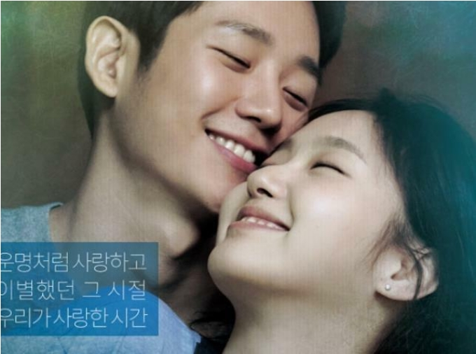
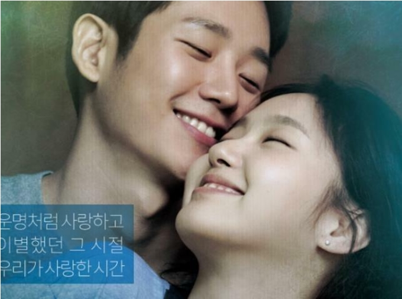

영화 <유열의 음악앨범> 비하인드 & 트리비아 4부
조회수 4.6만 | 2022-01-25 수정

영화 <유열의 음악앨범> 비하인드 & 트리비아 4부
정해인과 김고은은 <유열의 음악앨범> 홍보를 위해 나온 '컬투쇼'에서 상대방의 성격을 의미하는 애칭을 음식에 빗대며 설명했다. 김고은은 정해인을 '청국장같은 남자'라고 표현하며
대학교 때부터 다녔던 청국장집이 갑자기 떠올랐고, 정해인이 진국같은 남자여서 청국장이라고 표현했다"
라고 말하며 나중에는 꼭 청국장이 아니어도 된다라며 곰국으로 변경해 모두를 웃음 짓게 했다.
이에 정해인은 김고은을 '쌀밥'에 빗대며
워낙 밥을 좋아한다. 하얗고 항상 우리 곁에 있다"
라며 김고은의 매력과 장점을 어필했다.

-<유열의 음악앨범> 출연전 드라마 <밥 잘사주는 예쁜 누나>에서 손예진, <봄 밤>에서 한지민 등 연상녀 선배 배우들과 주로 멜로 연기를 했다. -김고은은 그의 멜로 연기중 최초의 연하녀 였던 셈. 이 때문에 처음으로 연하의 배우와 멜로 연기를 펼친 것에 대한 소감으로
행복했다"
라는 짧은 반응을 보여 눈길을 끌었다. 물론 연하라서 라기 보다는 너무나 호흡이 좋았기 때문이었다고 한다.